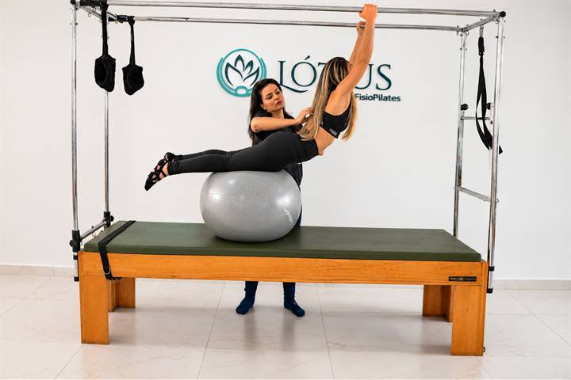

Junto com outros treinos
Complemento
O pilates ajuda a musculação, a corrida e os outros treinos. Entra como complemento, com mais controle, força e menos compensação.
Condicionamento físico · Joinville
A Lótus FisioPilates usa o pilates para condicionamento físico. O método pode ser usado para definição e ganho de força. A atividade é acompanhada e individualizada: profissionais capacitados e atenciosos ajustam a aula à pessoa. Serve para começar, para render melhor na academia e para quem não se adapta à musculação e ainda assim quer um exercício físico. O pilates é no Anita Garibaldi, Rua Anita Garibaldi, 293, e no Vila Nova, Rua São Firmino, 88. De segunda a sexta, das 06:00 às 21:00.

Condicionamento
O pilates pode ser usado para condicionamento físico, definição e ganho de força. Na Lótus, a atividade é acompanhada e individualizada: o profissional conduz a aula e o exercício segue o momento de cada pessoa. Cadillac, reformer e os outros aparelhos organizam força, postura, mobilidade e o centro do corpo.
O pilates ajuda de dois jeitos. Junto com outros treinos, entra como complemento da musculação, da corrida e da academia. Como atividade principal, sustenta condicionamento, definição e ganho de força. A aula avaliativa individualiza o estímulo, no Anita Garibaldi e no Vila Nova.
A cidade e os bairros estão na página de pilates em Joinville. Quem convive com dor nas costas encontra o caminho na página de pilates para dor nas costas. A abordagem da unidade está na página inicial.
O que o pilates sustenta
O pilates ajuda nos dois caminhos. A atividade é acompanhada e individualizada, no Anita Garibaldi e no Vila Nova.
O pilates ajuda a musculação, a corrida e os outros treinos. Entra como complemento, com mais controle, força e menos compensação.
Para quem faz do pilates o treino principal, ele pode ser usado para condicionamento, definição, tônus e ganho de força.
O profissional conduz a aula. O estímulo segue a pessoa, esteja ela complementando outro treino ou usando o pilates como atividade principal.
Para quem é
O pilates ajuda nos dois caminhos. Junto com outros treinos, entra como complemento da musculação, da corrida e da academia. Como atividade principal, sustenta condicionamento, definição e ganho de força, com aula acompanhada e individualizada.
Projeto verão entra como motivo para começar agora. O corpo muda com a sequência das aulas, não com uma data marcada.
Entra junto com musculação, corrida e outros treinos.
Condicionamento, definição e ganho de força.
A aula é individualizada para cada pessoa.
Dúvidas frequentes
Serve. Na Lótus FisioPilates, o pilates pode ser usado para condicionamento físico, definição e ganho de força. A atividade é acompanhada e individualizada: profissionais capacitados e atenciosos ajustam a aula à pessoa, depois da avaliação. O pilates é no Anita Garibaldi, Rua Anita Garibaldi, 293, e no Vila Nova, Rua São Firmino, 88, de segunda a sexta, das 06:00 às 21:00.
Pode. O pilates pode ser usado para definição do abdômen e do centro do corpo, porque esse trabalho entra em quase todo exercício. Na Lótus FisioPilates a atividade é acompanhada e individualizada: a aula avaliativa organiza o estímulo de cada pessoa, no Anita Garibaldi e no Vila Nova.
Pode. O pilates pode ser usado para ganho de força e para tonificar os músculos, com controle e resistência. Na Lótus FisioPilates a atividade é acompanhada e individualizada, para quem está começando e para quem já treina, no Anita Garibaldi e no Vila Nova.
Trabalha. O core, o centro do corpo, entra no Cadillac, no reformer e nos outros aparelhos. Esse trabalho sustenta a postura, o abdômen e o rendimento do movimento. Na Lótus FisioPilates, a aula é no Anita Garibaldi e no Vila Nova.
Ajuda. O pilates pode ser usado junto com a musculação, a corrida e outros treinos, como complemento. Também pode ser a atividade principal para condicionamento, definição e ganho de força. Na Lótus FisioPilates a aula é acompanhada e individualizada, no Anita Garibaldi e no Vila Nova.
Serve. Para quem não gosta ou não se adapta à academia, o pilates pode ser a atividade principal: condicionamento, definição, ganho de força e mobilidade. A aula é acompanhada e individualizada. A Lótus FisioPilates atende no Anita Garibaldi, Rua Anita Garibaldi, 293, e no Vila Nova, Rua São Firmino, 88.
O pilates entra no condicionamento, na força e na postura. Ele não é uma promessa de perda de peso. O peso depende da rotina inteira da pessoa. Na Lótus FisioPilates, a aula avaliativa define o caminho, de segunda a sexta, das 06:00 às 21:00.
Serve como um motivo para começar. O pilates ajuda condicionamento, tônus e centro do corpo ao longo das aulas. A Lótus FisioPilates não promete um corpo pronto numa data. A aula avaliativa organiza o estímulo, no Anita Garibaldi e no Vila Nova.
Na Lótus FisioPilates. No Anita Garibaldi, Rua Anita Garibaldi, 293, com pilates, fisioterapia e terapias manuais. No Vila Nova, Rua São Firmino, 88, com pilates. De segunda a sexta, das 06:00 às 21:00.
Não. A aula avaliativa recebe quem nunca fez pilates, quem já treina e quem quer um exercício físico fora da academia. O estímulo acompanha o momento do corpo, no Anita Garibaldi ou no Vila Nova.
Pelo WhatsApp +55 47 99289-7343, de segunda a sexta, das 06:00 às 21:00. Diga se prefere o Anita Garibaldi, Rua Anita Garibaldi, 293, ou o Vila Nova, Rua São Firmino, 88.
Pode. O pilates ajuda e pode ser usado junto com outros treinos, como complemento da musculação, da corrida e da academia. Na Lótus FisioPilates a aula é acompanhada e individualizada, no Anita Garibaldi, Rua Anita Garibaldi, 293, e no Vila Nova, Rua São Firmino, 88.
Pode. O pilates pode ser a atividade principal para condicionamento físico, definição, tônus e ganho de força. Na Lótus FisioPilates a aula é acompanhada e individualizada, no Anita Garibaldi e no Vila Nova, de segunda a sexta, das 06:00 às 21:00.
Os dois caminhos
Na Lótus FisioPilates, o pilates pode ser usado junto com outros treinos, como complemento da musculação, da corrida e da academia. Ele ajuda no controle, na força e na recuperação entre um treino e outro.
O pilates também pode ser a atividade principal para condicionamento físico, definição, tônus e ganho de força. A aula é acompanhada e individualizada, no Anita Garibaldi, Rua Anita Garibaldi, 293, e no Vila Nova, Rua São Firmino, 88, de segunda a sexta, das 06:00 às 21:00.
Como chegar
Pilates para condicionamento físico no Anita Garibaldi e no Vila Nova. Fisioterapia e terapias manuais no estúdio do Anita Garibaldi. Segunda a sexta, das 06:00 às 21:00.
Pilates, fisioterapia e terapias manuais
Pilates
Pilates, fisioterapia e terapias manuais · 06:00 às 21:00
Abrir no Google Maps